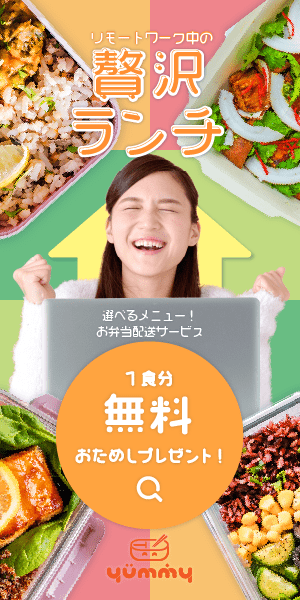
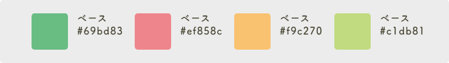
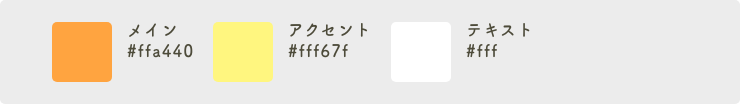

<!DOCTYPE html>
<html lang="ja">

<head>
    <!-- Google Tag Manager -->
    <script>(function (w, d, s, l, i) {
            w[l] = w[l] || []; w[l].push({
                'gtm.start':
                    new Date().getTime(), event: 'gtm.js'
            }); var f = d.getElementsByTagName(s)[0],
                j = d.createElement(s), dl = l != 'dataLayer' ? '&l=' + l : ''; j.async = true; j.src =
                    'https://www.googletagmanager.com/gtm.js?id=' + i + dl; f.parentNode.insertBefore(j, f);
        })(window, document, 'script', 'dataLayer', 'GTM-MWZFMF5');</script>
    <!-- End Google Tag Manager -->
    <meta charset="UTF-8">
    <meta http-equiv="X-UA-Compatible" content="IE=edge">
    <meta name="viewport" content="width=device-width, initial-scale=1.0">
    <link rel="icon" type="image/svg" href="img/common/common_img06_favicon.svg">
    <title>works-banner01</title>
    <!-- quicksandフォント -->
    <link rel="stylesheet" href="https://use.typekit.net/clv8fvy.css">
    <!-- quicksandフォントここまで -->
    <!-- googleアイコン -->
    <link href="https://fonts.googleapis.com/icon?family=Material+Icons" rel="stylesheet">
    <!-- googleアイコンここまで -->

    <link rel="stylesheet" href="style.css">
    <!-- 筑紫A丸ゴシック -->
    <script>
        (function (d) {
            var config = {
                kitId: 'tox0gjx',
                scriptTimeout: 3000,
                async: true
            },
                h = d.documentElement, t = setTimeout(function () { h.className = h.className.replace(/\bwf-loading\b/g, "") + " wf-inactive"; }, config.scriptTimeout), tk = d.createElement("script"), f = false, s = d.getElementsByTagName("script")[0], a; h.className += " wf-loading"; tk.src = 'https://use.typekit.net/' + config.kitId + '.js'; tk.async = true; tk.onload = tk.onreadystatechange = function () { a = this.readyState; if (f || a && a != "complete" && a != "loaded") return; f = true; clearTimeout(t); try { Typekit.load(config) } catch (e) { } }; s.parentNode.insertBefore(tk, s)
        })(document);
    </script>
    <!-- 筑紫A丸ゴシックここまで -->
</head>

<body>
    <!-- Google Tag Manager (noscript) -->
    <noscript><iframe src="https://www.googletagmanager.com/ns.html?id=GTM-MWZFMF5" height="0" width="0"
            style="display:none;visibility:hidden"></iframe></noscript>
    <!-- End Google Tag Manager (noscript) -->
    <!--========================================================
    ヘッダー
    =========================================================-->
    <header id="header" class="l-header ">
        <div class="l-header__inner p-header">
            <div>
                <h1>
                    <a href="index.html" class="p-header__logolink">
                        
                    </a>
                </h1>
            </div>
            <!-- メニュー -->
            <nav class="c-nav">
                <ul class="c-nav__list">
                    <li class="c-nav__item"><a href="index.html" class="c-nav__link">Home</a></li>
                    <li class="c-nav__item"><a href="index.html#works" class="c-nav__link">Works</a></li>
                    <li class="c-nav__item"><a href="about.html" class="c-nav__link">About</a></li>
                    <li class="c-nav__item"><a href="#contact" class="c-nav__link">Contact</a></li>
                </ul>
            </nav>
            <!-- メニューここまで -->
            <!-- ハンバーガーメニュー -->
            <div class="c-hamburger">
                <div class="c-hamburger-btn">
                    <span></span>
                    <span></span>
                </div>
                <nav class="c-hamburger-menu">
                    <div class="c-hamburger-menu__list">
                        <!--ナビの数が増えた場合縦スクロールするためのdiv※不要なら削除-->
                        <ul>
                            <li><a href="index.html" class="c-hamburger-menu__list-a">Home</a></li>
                            <li><a href="index.html#works" class="c-hamburger-menu__list-a">Works</a></li>
                            <li><a href="about.html" class="c-hamburger-menu__list-a">About</a></li>
                            <li>
                                <a href="#contact" class="c-hamburger-menu__list-a">Contact</a>
                            </li>
                            <li class="c-hamburger__icon">
                                <a href="https://twitter.com/renton_design">
                                    
                                </a>
                                <a href="https://renton-blog.com/">
                                    
                                </a>
                            </li>
                        </ul>
                    </div>
                </nav>
                <div class="c-hamburger-menu__circle-bg"></div>
            </div>

            <!-- <div class="c-hamburger">
                <span class="c-hamburger-span"></span>
                <span class="c-hamburger-span"></span>
            </div> -->
            <!-- ハンバーガーメニューここまで -->
        </div>
    </header>
    <!--========================================================
    ヘッダーここまで
    =========================================================-->

    <!--========================================================
    メイン
    =========================================================-->
    <main class="l-main">
        <div class="l-main__upper"></div>
        <!--========================================================
        MV
        =========================================================-->
        <div class="p-detail-mv">
            <h2 class="h2-detail-title">宅食バナー<br>(仮想案件)</h2>
            <div class="u-banner-mv">
                <div class="u-banner-mv__img01-outer">
                    
                </div>
                <div class="u-banner-mv__flex">
                    <div>
                        
                    </div>
                    <div>
                        
                    </div>
                </div>
            </div>
        </div>
        <!--========================================================
        MVここまで
        =========================================================-->

        <!--========================================================
        解説
        =========================================================-->
        <section class="p-detail-intro l-main__mb-common">
            <!-- <div class="c-button p-detail-intro__button">
                <a href="#" class="c-button__inner">Link</a>
            </div> -->

            <p class="p-detail-intro__caption">
                リモートワークを支える冷凍宅食サービスの広告バナー<br>
                プロのデザイナーさんに作成いただいた課題に取り組みました。
            </p>
            <table class="p-detail-intro__table">
                <tr class="p-detail-intro__tr">
                    <th class="p-detail-intro__th">担当範囲</th>
                    <td class="p-detail-intro__td">ペルソナ設定、デザイン、ロゴ</td>
                </tr>
                <tr class="p-detail-intro__tr">
                    <th class="p-detail-intro__th">デザインツール</th>
                    <td class="p-detail-intro__td">Photoshop(画像加工) / Illustrator(バナー・ロゴ)</td>
                </tr>
                <tr class="p-detail-intro__tr">
                    <th class="p-detail-intro__th">仕様</th>
                    <td class="p-detail-intro__td">GDNバナー 300×250px / 728×90px / 300×60px / jpgもしくはpng形式 / 150kb以内</td>
                </tr>
                <tr class="p-detail-intro__tr">
                    <th class="p-detail-intro__th">制作期間</th>
                    <td class="p-detail-intro__td">約1週間</td>
                </tr>
            </table>
        </section>
        <!--========================================================
        概要ここまで
        =========================================================-->


        <!--========================================================
        解説
        =========================================================-->

        <article class="p-detail-commentary">
            <section class="c-detail-commentary">
                <h3 class="h3-detail-heading c-detail-commentary__heading">ターゲット</h3>
                <h4 class="h4-detail-heading-sub c-detail-commentary__heading-sub">ペルソナ</h4>
                <div class="c-detail-commentary__img-outer">
                    
                    <div class="c-detail-commentary__text">
                        <p class="c-detail-commentary__persona-p">
                            杉田静香 27歳 女性<br>
                            出身：埼玉県<br>
                            居住地：東京都武蔵野市<br>
                            物件：8畳1DK 一人暮らし<br>
                            世帯：独身<br>
                            職業：事務職<br>
                        </p>
                        <p class="c-detail-commentary__persona-p">
                            会社もテレワークの組織運用に慣れてきて、
                            探り探りだった仕事量もむしろテレワーク開始前より増えてしまった。<br>
                            在宅を活かして自炊をしていたがその余裕も無くなった。<br>
                            一方、近所の弁当はもう一通り食べ飽きてしまった。<br>
                            なるべく時間をかけずに、いつもと違うご飯が食べたい。<br>
                            少し高めでも良いので、栄養があって元気になりそうなご飯が食べたい。。　
                        </p>
                        <p class="c-detail-commentary__persona-p">
                            素材提供元： <a href="https://www.pakutaso.com/" class="c-detail-commentary__persona-a">ぱくたそ</a>
                        </p>
                    </div>
                </div>
            </section>
            <section class="c-detail-commentary">
                <h3 class="h3-detail-heading c-detail-commentary__heading">ゴール</h3>
                <h4 class="h4-detail-heading-sub c-detail-commentary__heading-sub">制作面</h4>
                <p class="c-detail-commentary__text c-detail-commentary__text-pb">
                    新サービスの認知拡大<br>
                    お試し利用会員の獲得<br>
                    訴求ポイント「温めるだけでお手軽」「贅沢」「選べる」 </p>
                <h4 class="h4-detail-heading-sub c-detail-commentary__heading-sub">スキル面</h4>
                <p class="c-detail-commentary__text">
                    複数サイズで、印象に齟齬が出ないように作成する
                    多色配色にチャレンジする
                </p>
            </section>
            <section class="c-detail-commentary">
                <h3 class="h3-detail-heading c-detail-commentary__heading">レイアウト</h3>
                <p class="c-detail-commentary__text c-detail-commentary__text-pb">
                    訴求ポイント中の「選べる」を特に強調する方向でデザインしました。<br>
                    弁当でXやジグザグを描くようにレイアウトし、背景色をタイル状に置き、中央の女性は「選べないよ！」と迷いながらもワクワクしているような表情とポーズを選定し。選択肢の多さをアピールしました。<br>
                    フォントは<a href="https://fonts.adobe.com/fonts/vdl-megamaru"
                        class="c-detail-commentary__persona-a">VDLメガ丸R</a>で軽さを出しつつ、メインフレーズの「贅沢ランチ」にはあしらいでリッチ感を追加しました。
                </p>
            </section>
            <section class="c-detail-commentary">
                <h3 class="h3-detail-heading c-detail-commentary__heading">配色</h3>
                <div>
                    <a href="" class="c-modal__a">
                        
                    </a>
                    <a href="" class="c-modal__a">
                        
                    </a>
                </div>
                <p class="c-detail-commentary__text">
                    食べて元気に慣れそうなイメージを受けてもらうため、ベジタブルカラーのライトトーンで選定しました。<br>
                    フレーズ・ボタンは暖色で強調し、角丸や円で周囲の形との差別化を図り、最終的に視線が向くことを意識しました。 </p>
            </section>
            <section class="c-detail-commentary">
                <h3 class="h3-detail-heading c-detail-commentary__heading">素材</h3>
                <p class="c-detail-commentary__text c-detail-commentary__text-pb">
                    弁当はヘルシーさ・美味しさを強調するため、緑が多めのものを選定しました。<br>
                    リモートワーカーが対象ですが、PCを扱う写真で良い構図のものがなかったため、それぞれの素材を重ねて作成しました。<br>
                    いずれもPhotoshopで切り抜き、彩度調整を行いました。
                </p>
                <p class="c-detail-commentary__text">
                    写真：<a href="https://publicdomainq.net/" class="c-detail-commentary__persona-a">パブリックドメインQ </a><br>
                    弁当・PC：<a href="https://unsplash.com/" class="c-detail-commentary__persona-a">unsplash</a>
                </p>
            </section>
            <section class="c-detail-commentary">
                <h3 class="h3-detail-heading c-detail-commentary__heading">制作経緯</h3>
                <p class="c-detail-commentary__text">
                    たけうちみゆきさん（ <a href="https://twitter.com/garakutamju"
                        class="c-detail-commentary__persona-a">Twitterリンク</a>）に課題を提供していただきました。<br>
                    サイズ違いの制作は初めてで、感覚が大きく変わりとても驚きましたが、それぞれのサイズを活かせるよう意識してレイアウトしました。<br>
                    主役と脇役のコントロール・余白の調整などについてレビューをいただきました。<br>
                    F1層よりも小さいお子さんを持つママ向けに近いという指摘があり、ターゲット設定からデザインへ落とし込む難しさを実感しました。<br>
                    今後の課題とし、トレンドのデザインを研究しています。
                </p>
            </section>
            <!-- 画像のモーダルウインドウ -->
            <div class="c-modal">
                <div class="c-modal__bigimg"></div>
                <p class="c-modal__close-btn"><a href="" class="c-modal__close-btn-a">✖</a></p>
            </div>
            <!-- 画像のモーダルウインドウここまで -->
        </article>
        <!--========================================================
        解説ここまで
        =========================================================-->
    </main>
    <!--========================================================
    メインここまで
    =========================================================-->
    <!--========================================================
    フッター
    =========================================================-->
    <footer class="l-footer c-topofpage__footercolor">
        <p id="page-top" class="js-hide-btn"><a href="#"> <span class="material-icons-outlined">arrow_upward</span>
                Top of page</a></p>
        <div class="l-footer__upper"></div>
        <div id="footer" class="l-footer__inner">
            <!-- フッター前半部分 -->
            <div class="p-footer-first">
                <!-- ロゴ -->
                <div>
                    <a href="index.html" class="p-footer__logolink">
                        
                    </a>
                </div>
                <!-- ロゴここまで -->
                <!-- メニュー -->
                <nav class="c-nav">
                    <ul class="c-nav__list">
                        <li class="c-nav__item"><a href="index.html" class="c-nav__link">Home</a></li>
                        <li class="c-nav__item"><a href="index.html#works" class="c-nav__link">Works</a></li>
                        <li class="c-nav__item"><a href="about.html" class="c-nav__link">About</a></li>
                        <li class="c-nav__item"><a href="#contact" class="c-nav__link">Contact</a></li>
                    </ul>
                </nav>
                <!-- メニューここまで -->
            </div>
            <!-- フッター前半部分ここまで -->

            <!-- フッター後半部分 -->
            <div class="p-footer-second">
                <div class="p-footer-second__icon">
                    <a href="https://twitter.com/renton_design" class="p-footer-second__img-outer">
                        
                    </a>
                    <a href="https://renton-blog.com/" class="p-footer-second__img-outer">
                        
                    </a>
                </div>
                <a href="#" id="page-top2" class="p-footer-second__back c-nav__link">
                    <span class="material-icons-outlined">arrow_upward</span>
                    Top of page</a>
            </div>
            <div class="p-footer-third">
                <p>Copyright &copy; 2021 renton, All rights reserved</p>
                <a href="praivacy-policy.html" class="c-nav__link">プライバシーポリシー</a>
            </div>
        </div>
        <!-- フッター後半部分ここまで -->

    </footer>
    <!--========================================================
    フッターここまで
    =========================================================-->
    <script src="https://ajax.googleapis.com/ajax/libs/jquery/3.6.0/jquery.min.js"></script>
    <script src="script.js"></script>
</body>

</html>